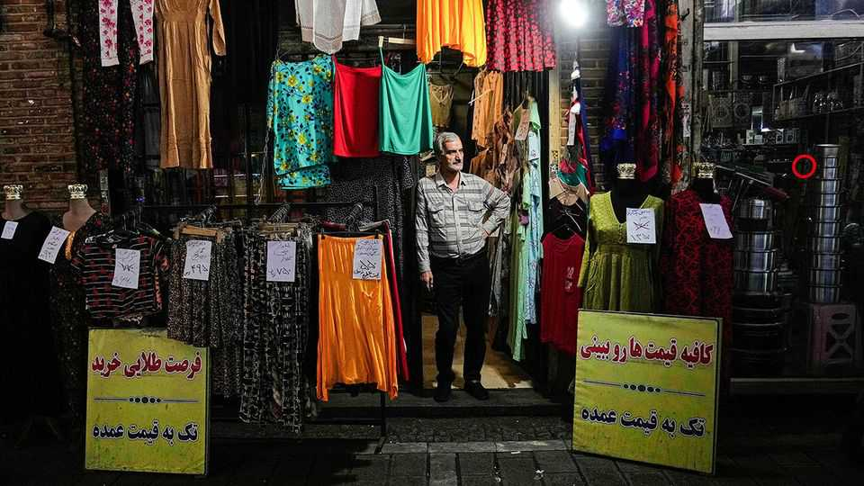
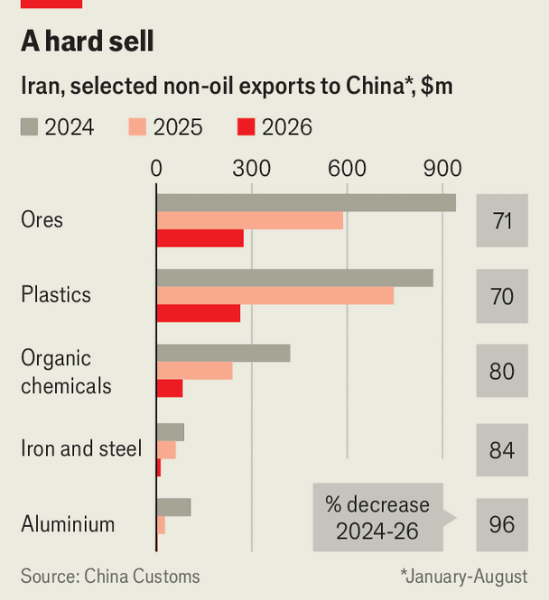

America’s blockade is breaking Iran’s economy
But not yet its regime

Oct 8th 2026
ASKED about predictions that Iran’s economy faced imminent collapse, Abdolnasser Hemmati, its central-bank governor, reached for a Persian proverb: chickens are counted at the end of autumn. Maybe so, but the early-autumn tally looks bleak. The currency has never been weaker. Inflation is at its highest since the second world war. Oil loadings fell to zero last month for the first time since 1979.
Iran is no stranger to economic crises—but this one looks uniquely bad. Even Mohsen Rezaei, the bombastic security chief, recently warned colleagues that Iran is facing one of the most difficult periods in its history, according to state media. America’s sanctions-and-blockade campaign is working, on its own terms. It is still unclear whether it will push Iran to end the Gulf war, now in its eighth month.
The rial has crashed through one record low after another. It trades at around 2.7m to the dollar. It has lost half its value this year (and 99% over the past decade). Last month the central bank injected $2bn of foreign currency into the market. That slowed the decline but failed to reverse it.
Currency collapse has spurred galloping year-on-year inflation, which hit 90% in September. Food and transport prices increased by more than 115%, and clothing by 97%. Prices for staple goods such as cooking oil, eggs and rice are all up by more than 200%. Pensioners have staged protests over allowances eroded by inflation. The nurses’ association says some members would rather quit than work for salaries that are now worth just $100 a month.
America has imposed tight sanctions on Iran before, but they were always porous. Even in 2020, at the height of Donald Trump’s “maximum pressure” campaign and the covid-19 pandemic, Iran still managed to sell more than 440,000 barrels a day of oil. America now enforces sanctions at gunpoint: warships are blockading Iran’s ports, and they disabled or sank at least eight Iranian oil tankers last month.
Though Iran did not load any new shipments of crude in September, it did continue selling oil to China, drawing from a supply held in seaborne storage (most of it in Asia). The stockpile is dwindling, however. Kpler, a data firm, estimates that Iran has perhaps 10m barrels of oil in storage outside the blockade line, down from more than 120m before the war. It will probably run dry within weeks. Though payments could continue until December, Iran’s most valuable export is about to dry up.

Nor can it export much of anything else. China, Iran’s biggest trade partner, typically imports more than $4bn of its non-oil goods a year. But in the eight months up to August, the latest for which figures are available, it bought just $746m from Iran, down by 67% from last year and 74% from 2024. Purchases of everything from plastics to pistachios have dived (see chart).
Iran is trying to redirect some trade via other routes—each a poor substitute for its Gulf ports. Lorries are stuck in days-long queues at land borders. The Caspian Sea offers a link to Russia and Central Asian states, but the capacities of both ports and ships are limited. An effort to export oil to China by train will deliver only a trickle: it would take 2,800 rail tank cars to match the capacity of one big ship.
Last month the Trump administration announced sanctions on foreign firms that refuel or service Iranian airliners. In the two weeks after the sanctions took effect, on September 23rd, there were just 153 arrivals and departures from Tehran’s international airport, down from 989 in the same period last year. Almost all were bound for China, Russia or Turkey.
Drug supplies, inter alia, will suffer. The Bourse & Bazaar Foundation, a think-tank, estimates that 60% of Iran’s medical imports come by air. Even before the latest sanctions, Iran’s pharmacists’ union said drug prices had risen by 150% this year.
Iran’s rulers are looking for a way out—on their own terms. Abbas Araghchi, the foreign minister, held indirect talks with American officials at the UN General Assembly last month. He presented Iran’s latest offer for a deal, basically an accelerated return to the memorandum of understanding (MOU), the short-lived agreement signed in June. If America met a series of conditions, Iran would reopen the Strait of Hormuz within a week. Mr Trump refused.
Diplomats were split on how to interpret the offer. Some, perhaps too optimistically, saw the compressed timetable as a sign of distress. The MOU gave Iran 30 days to reopen Hormuz; now Mr Araghchi proposed to do it in seven. Others thought Iran was going through the motions, presenting an offer it knew Mr Trump would decline. “It gives them cover if they decide to escalate,” argues one Arab envoy. “They can say America rejected diplomacy.”
That is a possibility. Iran has already stepped up its attacks on commercial ships in the strait, with at least ten in the past fortnight. Both sides are preparing for another round of all-out war. The stalemate will probably continue. But by December, Mr Trump will be free of the midterms and Iran’s final oil payments should come due. Perhaps Mr Hemmati’s proverb will prove apt: autumn ends on December 21st. ■